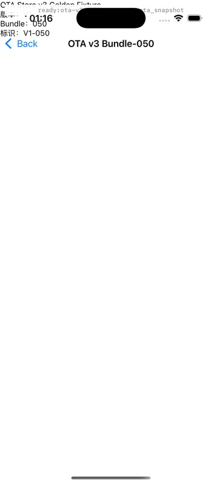
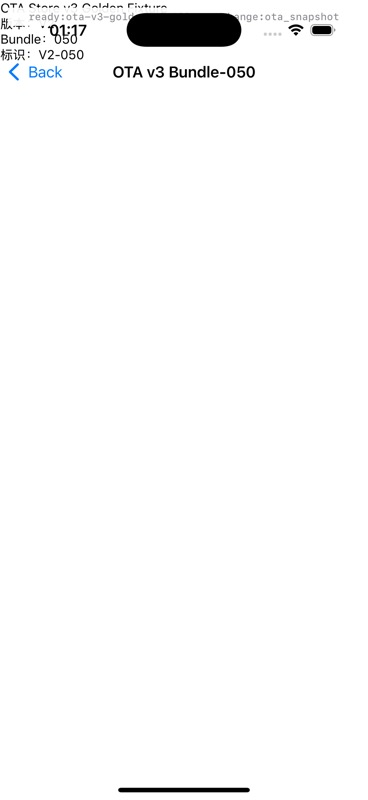
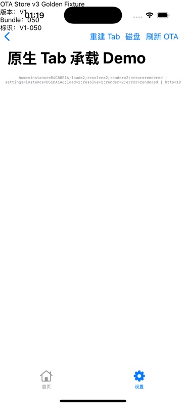
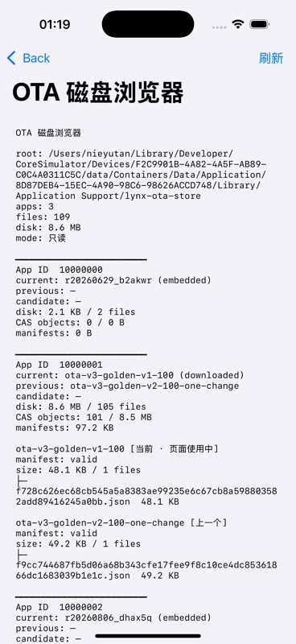
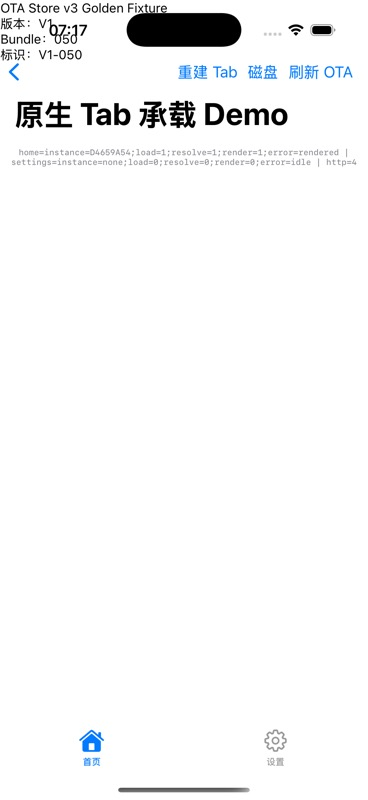

Lynx Navigation · OTA Store v3
iOS OTA Store v3 测试报告
本报告记录 iOS 端从空 Store 安装 100 个 Bundle、V1 → V2 单 Bundle 增量、ETag、CAS 历史对象复用、原生 Tab、失败保护和模拟器运行态截图。OTA 使用本地 fixture server，未依赖外网服务。
结果通过
设备iPhone 16 Pro / iOS 18.1
Fixtureota-store-v3-golden-100-v1-v2
App ID10000001
Server127.0.0.1:18765
执行日期2026-08-31
一眼结论
54Swift 单测通过
7 / 0XCUITest 通过 / 失败
3XCUITest 条件跳过
100 → 1V1 全量 / V2 二进制下载
101V1+V2 去重后 CAS 对象数
0未变化 Bundle 复制次数
iOS Gate：PASS
v3 的核心验收条件已在 iOS 完成：完整 Manifest 仍为 100 条；V1 → V2 只请求并写入变化的
bundle-050；回滚到已有历史对象时 Bundle 请求为 0；Tab 切换不请求 OTA，主动刷新才重读 current；错误 SHA 不提交新 State/Manifest。
测试矩阵与实际结果
| 用例 | 动作 | 实际结果 | 证据 |
|---|---|---|---|
| T01 Fixture | 校验 V1/V2 和 iOS/Android/Harmony Manifest | PASS：各 100 条；路径集合相同；仅 050 的 bytes/size/SHA 变化。 | verify-ota-store-v3-fixture.mjs |
| T10 首次安装 V1 | 卸载重装 App，启动本地 OTA | PASS：latest 200 + 304；100 个 Bundle 请求；8,775,400 bytes；100 个 CAS 对象；1 份 Manifest；current=V1，previous=embedded。 | 真实 URLSession + 模拟器磁盘快照 |
| T11 V1 → V2 | 本地 Server 切到 V2，点击原生 Tab 的“刷新 OTA” | PASS：Manifest 仍 100 条；仅请求 pages/10000001/bundle-050.lynx.bundle；1 个新对象；CAS=101；current=V2，previous=V1。 | 真实 URLSession + Server metrics + V2 截图 |
| T03 ETag | 同一进程两次同步 latest | PASS：第二次 latest 返回 HTTP 304；没有 Manifest/Bundle 字节下载和 Store 写入。 | Server latest statuses: 200, 304 |
| T20 Route | 打开当前 OTA bundle-050 | PASS：V1/V2 页面分别显示自身版本；Debug 状态显示 ota_snapshot，说明页面从固定的导航 release 快照读取。 | V1/V2 route screenshots |
| T23 Tab | 原生 UITabBarController 的 Home/Settings 往返 | PASS：两个 Tab 都显示 OTA V2；实例只创建一次；切换过程 latest/bundle 请求计数不增加；不消费 candidate。 | Tab Debug 状态 + Server metrics |
| T24 Tab 刷新 | 服务端切回 V1，点击“刷新 OTA” | PASS：两个 Tab 重载为 V1；load/resolve/render 从 1 变 2；Bundle 请求=0，因为 V1 的 050 对象已在 CAS。 | Tab V1 screenshot + metrics |
| T07 错误 SHA | 服务端把 V2 的 050 SHA 改成全 0，刷新 Tab | PASS：提示“OTA 同步失败”；current 保持 V1；CAS 对象数和 Manifest 数不变；恢复 normal 后可无下载切回 V2。 | 错误日志 + State/CAS 快照 |
| T14 App 隔离 | 相同 SHA 在两个 App ID 下安装 | PASS：两个 apps/<appId> 各自拥有对象和 State，删除/校验互不污染。 | v3 单测 |
| T15/T17/T18 | Manifest 故障恢复、candidate、容量/删除 lease/旧契约回归 | PASS：v3 Manifest 提交故障可重试恢复；candidate 确认前不替换 current；删除时 active lease 延迟回收；既有 v2 故障/容量测试继续通过。 | 54 个 Swift 单测 |
| 本轮本地 OTA UI smoke | 测试运行器注入本地 Base URL，运行 V1→V2 Tab 刷新 | PASS：1 passed，0 failed，0 skipped；只下载 V2 的 050。 | XcodeBuildMCP test_sim + Server metrics |
| 平台回归 | 运行 XCUITest Target | PASS：7 passed，0 failed，3 skipped。跳过项是 live OTA / mock token / F12 条件车道，不是失败。 | XcodeBuildMCP test_sim + xcresult |
运行态截图





磁盘与状态实证
V1 首次同步
{
"latestRequestCount": 2,
"bundleRequestCount": 100,
"bundleBytes": 8775400,
"objects": 100,
"manifests": 1,
"current": "ota-v3-golden-v1-100",
"previous": "r20260823_qc8ffc (embedded)"
}
V2 增量同步
{
"latestStatuses": [200, 304],
"bundleRequestCount": 1,
"bundlePath": ".../bundle-050.lynx.bundle",
"objects": 101,
"manifests": 2,
"current": "ota-v3-golden-v2-100-one-change",
"previous": "ota-v3-golden-v1-100"
}
Tab 主动刷新 / CAS 回滚
{
"tabReleaseAfterRefresh": "V1",
"tabLoadResolveRender": "2 / 2 / 2",
"bundleRequestCount": 0,
"bundleBytes": 0,
"objects": 101,
"current": "V1"
}
执行命令与可复现方式
生成并验证 100 Bundle Golden Fixture
cd playground pnpm ota:v3:fixture pnpm ota:v3:fixture:verify
启动本地 OTA Server
cd playground pnpm ota:v3:server # 默认：http://127.0.0.1:18765
iOS Store 单测
cd ios/OtaIOSSDK swift test --no-parallel # 54 tests in 9 suites passed
iOS Simulator 构建与 UI 回归
xcodebuild -workspace ios/LynxShell.xcworkspace \ -scheme LynxShell -configuration Debug \ -destination 'platform=iOS Simulator,id=F2C9901B-4A82-4A5F-AB89-C0C4A0311C5C' \ CODE_SIGNING_ALLOWED=NO build // 默认回归：7 passed / 0 failed / 3 skipped // 本地真实 OTA：LYNX_TEST_LIVE_OTA=1、LYNX_TEST_OTA_BASE_URL=http://127.0.0.1:18765 // testLiveOtaServerRefreshSmoke：1 passed / 0 failed / 0 skipped
剩余边界
- 本报告的真实 OTA 是 loopback 本地 fixture，已验证 URLSession、HTTP、Manifest、Bundle、CAS 和容器运行态；没有宣称外网生产服务可达。
- 本轮 iOS 平台门禁使用 iPhone 16 Pro / iOS 18.1 Simulator；iOS 真机网络权限、签名产物和低磁盘实机行为仍需业务发布前单独验证。
- candidate、Manifest 故障和 App ID 隔离已经有 SDK/Store 单测；本报告没有把未执行的 candidate 真机灰度写成运行态通过。
- 本轮 XCUITest 的本地 URL 覆盖只存在于测试 harness；生产仍要求宿主显式注入 HTTPS Base URL 和 clientToken。
- 第三方 Pod 存在部署版本和 PrimJS Script Phase 输出声明警告，均未阻断构建；没有改动第三方依赖。